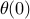

Let us first consider the case when we do not apply any torque, i.e. when , and try to understand what the model predicts about the behaviour of the free system. Once we have understood this, it will become evident how we can choose  to shape the dynamic response of the pendulum. But let’s not rush ahead of things: we’d better understand one thing at a time.
to shape the dynamic response of the pendulum. But let’s not rush ahead of things: we’d better understand one thing at a time.
Solving linear ordinary differential equations
When our linearized pendulum model can be put in the form
where and  . This is a linear ordinary differential equation (ODE) of second order, and you have probably solved hundereds of these in math classes. The solution takes the form
. This is a linear ordinary differential equation (ODE) of second order, and you have probably solved hundereds of these in math classes. The solution takes the form
where is a constant depending on the initial angle and angular velocity, and and are solutions to the characteristic equation
(if in doubt, just plug in the expression for  in the ODE and verify our claim).
in the ODE and verify our claim).
An important observation at this point is that the solutions to such a linear ODE will have three qualitatively different behaviours depending on the coefficients and (or, rather, depending on the real parts of the roots of the characteristic polynomial). If the real parts of the roots of the characteristic polynomial are negative, then will tend to zero with time; purely imaginary roots imply that is a sustained oscillation; and roots with positive real part indicate that will grow unboundedly.
Analysis of the inverted pendulum equation
Let’s try to be more specific, and consider how the discussion above applies to our pendulum equation.
The characteristic polynomial of our model has roots
where we have simply plugged in the expression for and that applies to the pendulum. Since the expression under the root is greater than  , it is easy to see that the characteristic polynomial will always have one positive and one negative root. Thus, the linearized model predicts that, once the angle is perturbed from its upright equilibrium position, the angle will grow unboundedly.
, it is easy to see that the characteristic polynomial will always have one positive and one negative root. Thus, the linearized model predicts that, once the angle is perturbed from its upright equilibrium position, the angle will grow unboundedly.
It makes sense that the angle grows, since the upright position is unstable, but our intuition of a pendulum tells us that angle should not grow larger than unless we inject energy into the system. What is wrong?
Remember the linearization? When we linearized the equations, we assumed that remained small, but the unstable behaviour contradicts this assumption. If we solve the nonlinear ODE (we often refer to the process of solving the ODE describing a physical system as “simulating” the system), we get just the behaviour that we would expect. Releasing the pendulum from a 45 degree () angle, the pendulum falls freely, passing the downwards equilibrium at by a large margin before turning back. Due to fricition, a significant amount of energy is lost in each swing and eventually the pendulum comes at rest hanging down at an angle of radians with respect to the initial upwards position; see the figure below. In the same figure, you can also see how the linearized model agrees with the nonlinear model initially, but becomes inaccurate when the angle grows large.
Although these results were not very encouraging, remember that a good balancing controller will make sure that the angle remains small, so the linearization could still be (and, in fact, will be) good enough for control design. But before we proceed, let’s try to see what the mathematical analysis can tell us about the pendulum around its stable downward equilibrium.
Analysis of the pendulum dynamics around its stable equilibrium
Once we have understood the analysis for the inverted pendulum, it is easy to perform a similar analysis of the pendulum dynamics around its stable (downward) equilibrium; see the figure below.
Note that we have redefined the angle so that it is zero when the pendulum hangs straight down, and that gravity now acts to pull the pendulum back towards the equilibrium. Repeating the argument from before, we find that the pendulum dynamics can be described by
In other words, it is only the gravity term that changes sign and the linearized equations for small angles becomes
whose characteristic equation has solutions
In this case, following our argument above, the square root term is less than , so the roots of the characteristic polynomial always have negative real part. Thus, the model indicates that the system has a stable behaviour.
In fact, there is an interesting limit case when there is no friction, i.e. when . The characteristic equation then has solutions
, so if we assume that the pendulum starts at rest (zero angular velocity) at  the linear ODE has the solution

where we have re-discovered that the natural frequency of a pendulum is . This expression conveys the fact that a shorter pendulum swings faster, but also quantifies that to half the natural frequency, we need to make the pendulum four times as long.
Validating the pendulum model against reality
Our analysis above indicate that the simple pendulum equation can reproduce, at least qualitatively, the behaviour of a physical pendulum. To verify that our model also can reproduce the behaviour of an actual pendulum, we built a simple pendulum using the LEGO NXT and recorded an actual swing. The picture below shows that our model is capable of reproducing the true pendulum behaviour very accurately.

With a basic trust in our model, let’s now proceed to see how we can choose to shape the dynamic behaviour of the pendulum [continue »].